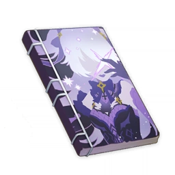

Teyvat & Unknown · Books & Literature
Flowers for Princess Fischl
Mr. Nine’s one-volume preliminary edition introduces the fictional Flowers for Princess Fischl series and includes an author Q&A about how he conceived its heroine.

A preliminary edition of a fictional series
Flowers for Princess Fischl is a one-volume preliminary edition sold by Kuroda at Yae Publishing House. Its item description says the first print run came in a violet-and-black wooden box and that readers complained about the small number of copies.
The volume is commentary and reader questions about the fictional series, rather than a complete installment of its story. Its sections discuss figures such as the Prinzessin, the Kaiserin, and the night raven Ozvaldo.
Mr. Nine on the Prinzessin
In the author Q&A, Mr. Nine is asked how the series' heroine relates to the Celestial Emperor's daughter in his Legend of the Shattered Halberd novels. He says the tragic end of that other story led him to create a Prinzessin who did not need a male protagonist.
He also says the two series influenced one another while he wrote them at the same time. This is an in-world account of a novelist's creative process, not evidence that the two fictional heroines share a real identity.
Amy and the name Fischl
Fischl's character story says Amy found comfort in the Flowers for Princess Fischl books as a child and began to inhabit the heroine's name and style. The real character's chosen persona therefore grows out of her relationship with a fictional series.
The limited-time Drama Phantasmagoria quest later stages the Immernachtreich through Fischl's imagination and the language of the books. Its scenes develop Amy's self-understanding; they do not establish the novel's events as Teyvat history.
The Suspected Eternal Return
One section of the preliminary edition speculates that the Kaiserin may once have experienced events like those faced by the Prinzessin. Its title marks the idea as a suspicion voiced within the book's commentary.
That speculation does not identify the Kaiserin with Amy or prove that the series records another world. The source leaves the fictional characters' deeper history unresolved.
What the volume establishes
The item establishes Mr. Nine's authorship, the series' limited-edition publication history, its named characters, and an author Q&A connecting its conception to Legend of the Shattered Halberd. Fischl's character story separately establishes how the books shaped Amy's persona.
The series remains fiction inside the game. The preliminary edition does not turn its Prinzessin, Kaiserin, or Immernachtreich into a historical account, and its own speculation is not a confirmed identity claim.
This is an original CoreGG reading guide, not an official HoYoverse article or a reproduction of the game text. Source links below identify the records used so you can check the original context.
Sources & references
Check these sources for the original game text and reference trail.
- Genshin Impact Wiki · book record
- Genshin Impact Wiki · Fischl character stories
- Genshin Impact Wiki · Mr. Nine
- Genshin Impact Wiki · Legend of the Shattered Halberd
- Genshin Impact Wiki · Drama Phantasmagoria: Tale of the Sword-Wielding Princess
- HoYoWiki · Books index
- HoYoverse · In-game Books Archive